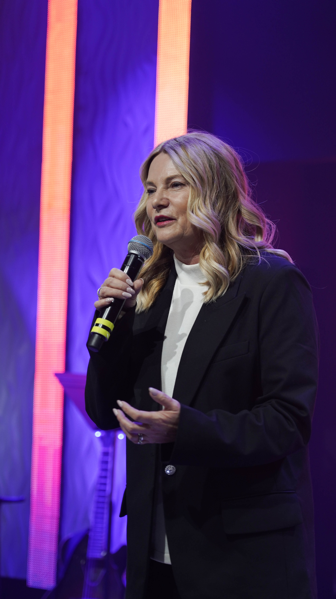

Church LA / CLA City - русскоязычная евангельская церковь в Лос-Анджелесе / North Hollywood, где люди собираются вокруг Иисуса Христа, Писания, молитвы и христианской общины.
CLA служит русскоязычным людям и семьям из России, Украины и других частей мира.
Мы - церковь для людей, которые ищут Христа, библейскую истину, молитву и христианскую общину в Лос-Анджелесе / North Hollywood.

Церковь учит библейской истине и доверяет Богу изменять жизни.
Иисус Христос - единственный путь к спасению.
Писание - авторитет церкви для веры и жизни.
Молитва занимает центральное место в жизни церкви.
Церковь учит, молится и служит, доверяя Богу преображать людей.
Текущее пасторское руководство началось в 2021 году.
Сегодня Church LA продолжает служить как русскоязычная евангельская церковь в Лос-Анджелесе / North Hollywood.
Леонид и Марина Малько служат Church LA в пасторском руководстве.
С 2021 года Леонид является старшим пастором CLA — русскоговорящей церкви в Лос-Анджелесе, входящей в объединение NHFC (LA International Christian Center).
В 2021 году Марина была рукоположена на пасторское служение в Лос-Анджелесе. Служит со-пастором церкви.
Мы держимся библейской христианской веры, открытой в Писании.
Писание - богодухновенное, авторитетное Слово Бога и авторитет церкви для веры и жизни.
Иисус Христос - единственный путь к спасению.
Есть один Бог, вечно существующий в трёх Лицах: Отец, Сын и Святой Дух.
Спасение дается по благодати через веру в Иисуса Христа, не делами, традициями или личными заслугами.
Мы верим в настоящее действие Святого Духа, Который наполняет верующих и дает силу для служения.
Водное крещение - внешнее свидетельство внутренней веры. Причастие - регулярный акт памяти и завета.
Поместная церковь - община, призванная поклоняться, расти, служить и посылать.
Молитва занимает центральное место в жизни церкви.
Воскресное служение проходит на русском языке.
CLA служит русскоязычным людям и семьям из России, Украины и других частей мира.
Люди из разных стран и с разным опытом могут искать здесь Христа и христианскую общину.
CLA побуждает людей расти от посещения к общине и служению.
Верующие могут использовать Богом данные дары для служения.